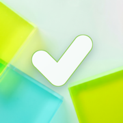
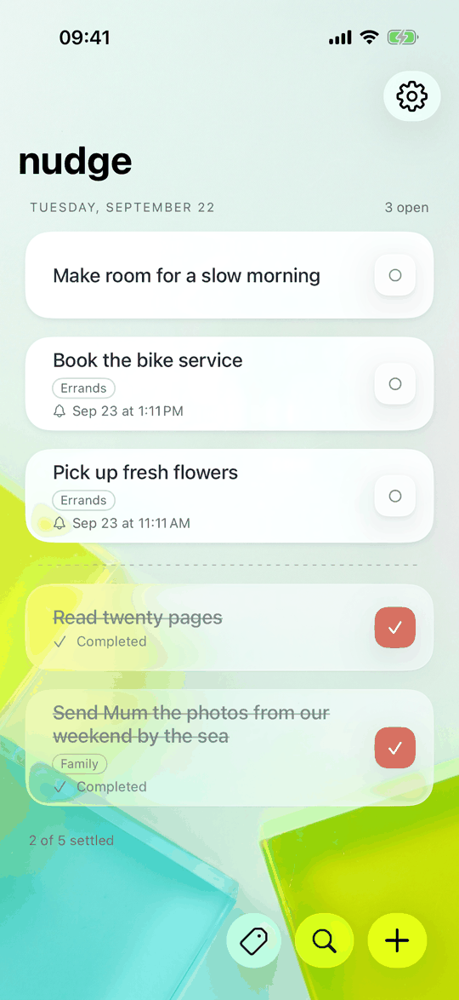
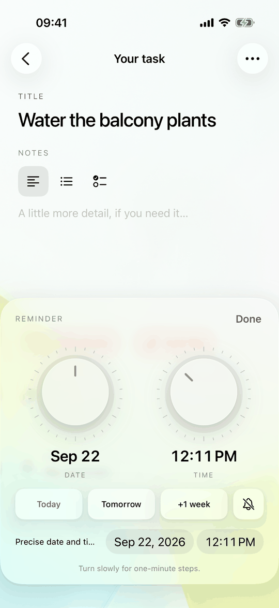
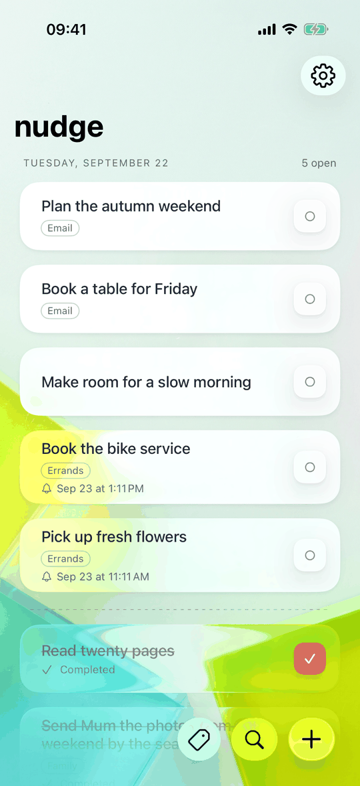
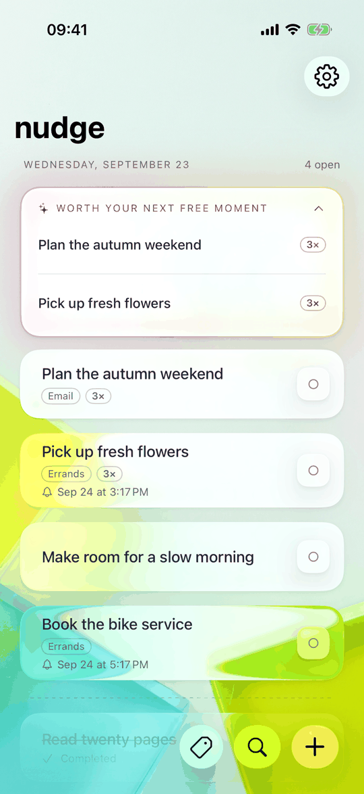

smart nudgesA beautiful, tactile to-do list for iPhone and iPad. Every task answers your touch with a sound and a feel of its own, so finishing one actually feels like something. And the notes you email to yourself arrive as tasks, without retyping a word.
iPhone and iPad · iOS 26 · No account, no tracking
Every interaction in smart nudges has a sound and a haptic of its own, generated rather than sampled, and each can be switched off on its own.
You already email yourself. smart nudges connects one mailbox, read-only, and turns the notes you send yourself into tasks.




The short list is the point.
There is nothing to sign up for. Tasks live on your device and, if you turn it on, in your own private iCloud database.
No server of ours ever sees your tasks, your notes or your mail. There is no server of ours in the path at all.
No analytics, no advertising, no third-party SDKs watching you work.
The first seven days are free. After that, nudge pro is needed only to add new tasks: everything you already have stays fully editable, and every other part of the app keeps working.
English, German, Spanish and French. iPhone and iPad, iOS 26 or later.
No. The first seven days are free. Afterwards, nudge pro is needed only to add new tasks. Everything you already have stays fully editable.
On your device and, if iCloud sync is on, in the private database of your own iCloud account. The developer has no access to it.
Only messages in your inbox whose sender and recipient are your own address, or one of the extra sender addresses you list. It reads the subject, the text and any attached files to create the task, and nothing else. It never marks, moves, deletes or sends mail.
Arriving subjects are compared with your open tasks by word overlap, ignoring reply markers and punctuation. A close match joins the task it repeats and raises its count instead of creating a second one.
No. Repeated tasks are offered at most the number of times a day you choose, never inside your quiet hours, and a task you keep putting off stops being offered.
Yes. Email import is optional and off until you connect a mailbox in Settings.
Something not working, or an idea for it? Open an issue and it will be looked at promptly.